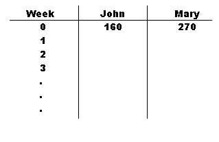
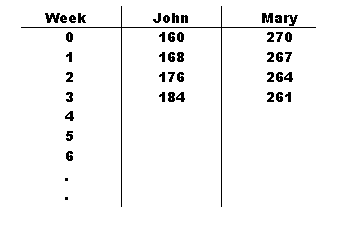
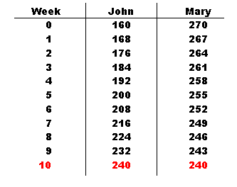
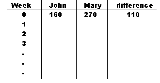

John has $160 in his bank account and saves $8 each week. Mary has $270 in her account and withdraws $3 each week. After how many weeks will they have the same amount? What will that amount be?Here is an interesting "real-world" problem that young students can surely relate to, I would imagine. Two individuals have some money in a bank. One puts in a certain amount on a weekly basis, so the amount of money in the account goes "up". The other person takes out a certain amount each week, so that amount goes "down". Once again, as has been discussed in recent entries in this website, the strategies for solving it will vary with the mathematical maturity and capacity of the solver. An algebra student would use variables and equations, and find the answers in rather short order (see Appendix below). But that approach is obviously inappropriate for the younger individual. Even more so I feel that it misses the fundamental "reality" of the problem. This problem treats of two persons whose bank balances are going in opposite directions; the lower one is rising and the higher one is decreasing. And our goal is to find when these balances match. For this problem to be truly meaningful to the majority of students, it would be better if they could "see" the weekly balances as they are formed. Hence, there enters our old problem-solving standby: the "CHART". Here's what it should probably look like in this situation:  Gradually, as the student begins to fill out the chart, it begins to take this shape: Soon, the goal of equal balances is reached. And the two questions can be easily answered, without algebra, but with "real life" meaning. That's all there is to it! "After 10 weeks John and Mary each have $240."The procedure, while essentially quite easy, does prove to be somewhat of a challenge for many children. They are not accustomed to a "story" problem that has so many numbers in it, or so many computations either. And this situation can be made a bit more "tecky" if calculators and working partners are used. For example, most calculators have a "constant operation" capacity, especially the non-scientific, four-function models. Once the "addition" mode (or "subtraction" mode) is operative, one only need to press the "[=]" key to produce the subsequent balances in the columns. And if this task is shared by two individuals -- one taking the role of John, the other of Mary -- you have "cooperative group" problem solving! The secret to creating additional practice examples lies in some clever observations and thinking. To see what that entails, let's return to the first chart and add on an extra column: the "Difference" of the various balances.  Now as John's balance increases by $8 and Mary's decreases by $3, this means there is an $11 net change each week; that is, the balances becomes closer together by $11 each week. Since they began $110 apart, this tells us it would take 10 weeks [$110 ÷ $11/wk = 10 wk] to bring the difference down to $0. (Actually filling out the chart for all those balances enhances the impact of this fundamental point.) The procedure may now be summarized as: 1. Select two monetary values with a sufficiently large difference between them. 2. Find a divisor/factor of that difference, medium sized. 3. Separate that divisor/factor into two addends, denoting one as the "savings" value, the other as the "withdrawal" value. 4. Place those numbers in their respective places in the "story".Appendix
The algebraic solution of our problem might go something like this: Let w = the number of weeks to achieve equal balances. Then John's current balance takes on this equation:Likewise for Mary we have: j = 160 + 8w
Equal balances implies j = m. Therefore, we state: m = 270 - 3w
and the rest is textbook mechanics. [To return to text above, click here.] 160 + 8w = 270 - 3w
| Comments? Send e-mail. | Back to top | Go back to Home Page | Go back to Contents |